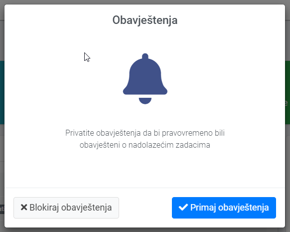
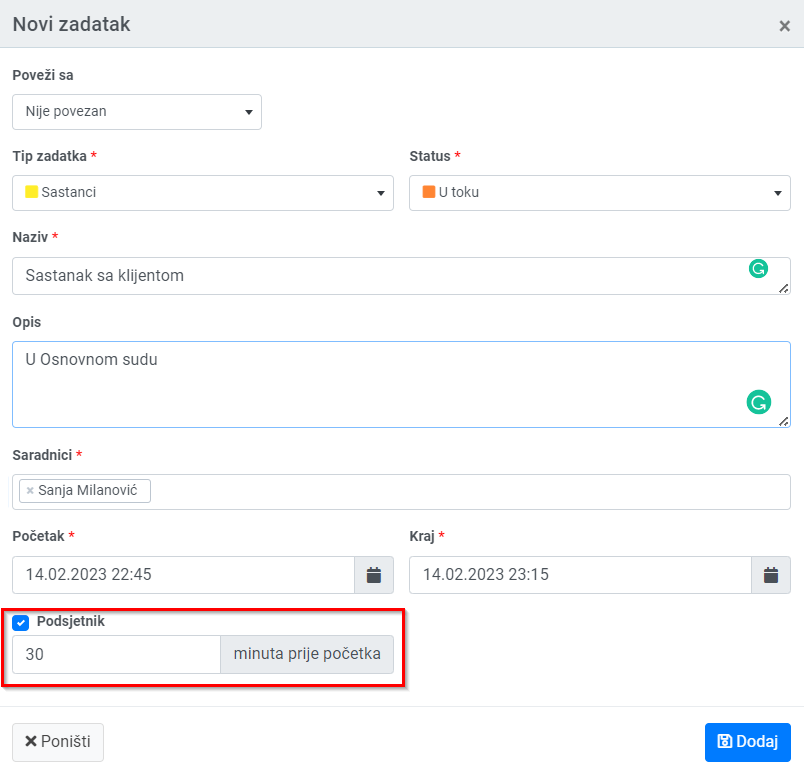
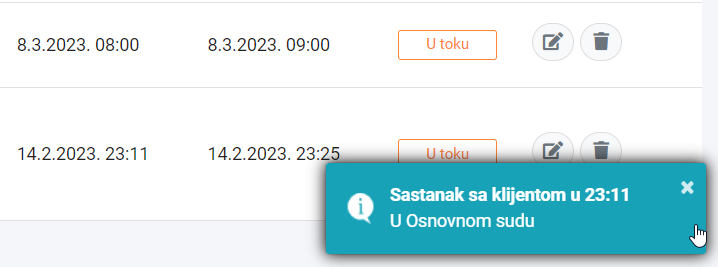
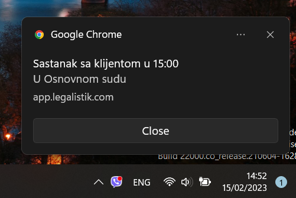

Pri otvaranju Legalistik aplikacije putem web pretraživača (Chrome, Edge…), prikazat će vam se prozor u kojem trebate odobriti prikazivanje obavještenja od strane Legalistik-a:

Kod dodavanja novog ili izmjene postojećih obaveza i zadatka, sad možete ostaviti uključen podjetnik, koji će vas obavijesiti o obavezi unutar web pretraživača ili Windows operativnog sistema:

Ako vam je uključena Legalistik aplikacija i trenutno je aktivna, podsjetnik će vam se pojaviti u donjem desnom uglu web pretraživača:

U slučaju da je web pretraživač spušten ili nije aktivan, podsjetnik će biti prikazan u donjem desnom dijelu Windows-a:
